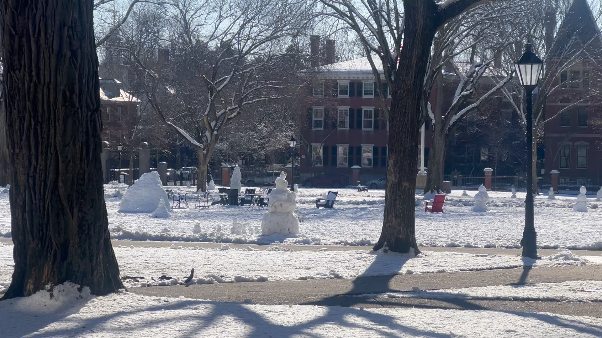

Faces in Mortar
Feb 16 2026
Gods are always dripping down my fingers onto paper from the heart, rough and sticky, falling down when the stick comes out clean.
There is so much panic in your voice, you tell me, you say You remind me of sports slicing on water and ice and you remind me of rains, swearing to me that truths can be picked up and washed away, you’ll call a blood rain cleansing. You’re white-hot candy medallions on silver steel, you’re sparrows twisting soft shapes on a gray sky, dropping cocoa through air and you’re keeping the smell of the heating as your ringtone.
But you build three mile three rigged three wheeling sandwalls, keeping the mosquitoes out at night and pollen in the day, you build a dome to protect your midnight city, you bring in your father’s wartime ammunition. You will feel nothing. Break beliefs off your wrists like holding balloons by the knuckles, you will not believe in magic, you will not believe in god. You will feel nothing. You will feel nothing.
Keep on, keep at it, keep stretching lies like glass, because isn’t it so hard to explain things? Manufactured manifestos wrap tight around you like drapery, these complexities are hard to hold and cold to unravel, they are swineskin hidden under iron, shelves in printing cabinets, reminders unknown and silverware stored astow. They are fortune cookies telling you your body is askew.
Where does your shadow go when you fly too high? I think it's fine to break a wire when the cable’s too slow, I think that’s fine. Catch yourself and all that drapery, it’s worth catching, it’s worth writing a household for, worth saving a fire for or waiting a century for, worth a song and a list and a march and an April, and worth a lot of twists, home runs, fights, it’s worth it, it’s worth it, it’s worth it.
You’re gone, cast under snow and faces found in water, you’ll be back, you’ll climb into the back seat and twist me on a right turn, you’ll return like midnight returns for a lamp, you’ll return like time returns for a god or like water to a maternal spring. You’ll return, you’ll writhe, you’ll loosen, you’ll pull, you’ll be warm and you’ll be cool, you’ll return, you’ll return, you’ll return.
